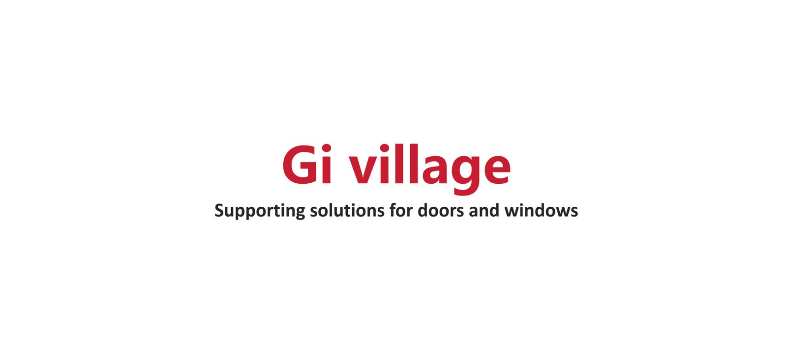
From leak-proof window sill boards to minimalist canopies — Gi Village engineers a complete system of window surrounds, casings and railings in architectural TIGER finishes.
Eight engineered product families in 6063-T5 aluminum, designed as a coordinated system for modern façades — available in TIGER Black, Grey, White and Coffee finishes.
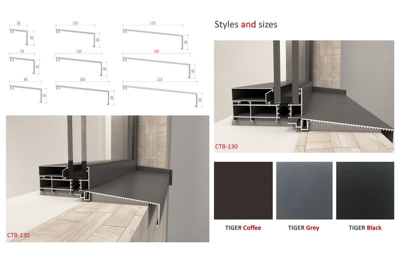
CTB series system boards that prevent all window sills from leaking water. Sizes 50–210 mm, 6063-T5 aluminum.
View details →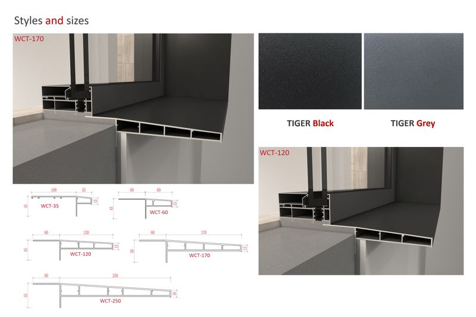
WCT series window surrounds that make doors and windows a beautiful sight in architecture. Depths 35–250 mm.
View details →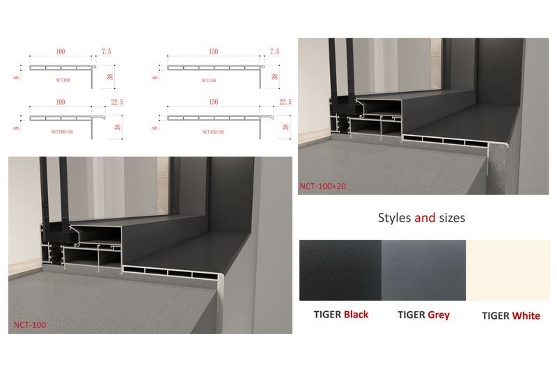
Extremely narrow NCT series casings — make doors and windows more beautiful to the extreme, from just 100 mm.
View details →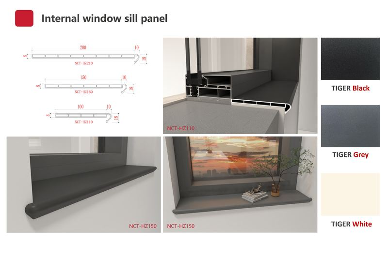
NCT-IZ and NCT-HZ series interior sills in Black, Grey and White TIGER finishes for clean, maintenance-free reveals.
View details →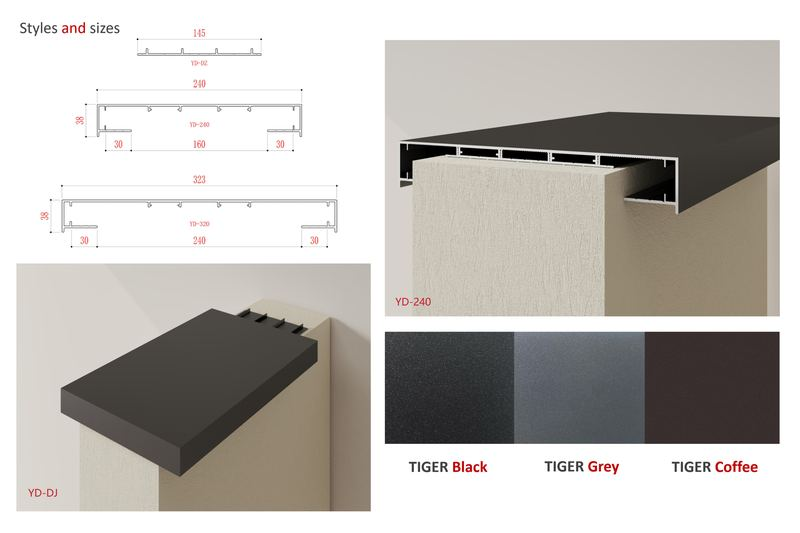
YD series copings for parapet and roof-edge finishing — 240 to 350 mm profiles, including CNC-engraved options.
View details →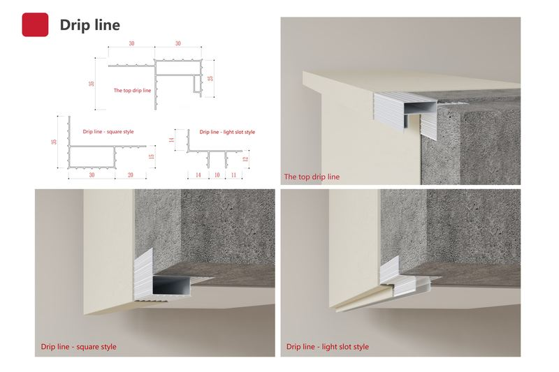
Top drip lines plus square and light-slot styles that shed water cleanly and integrate concealed lighting.
View details →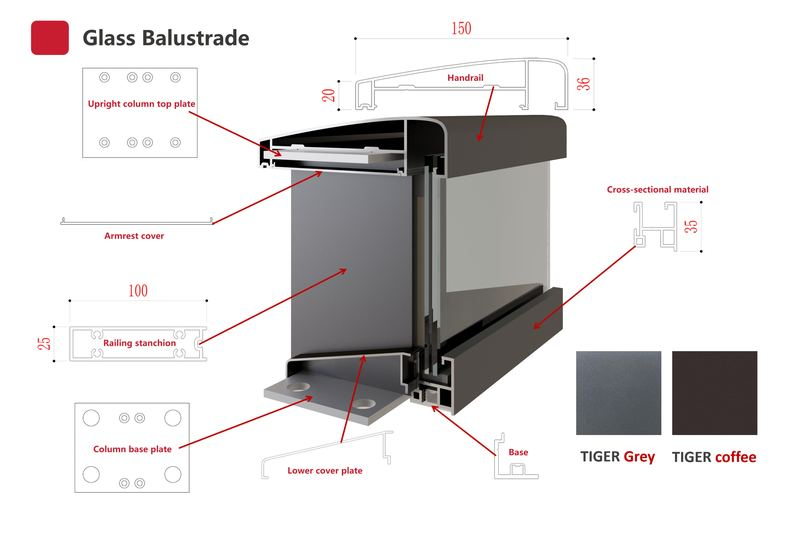
HL series railing system — handrail, armrest cover, stanchion and base plates in TIGER Grey and Coffee.
View details →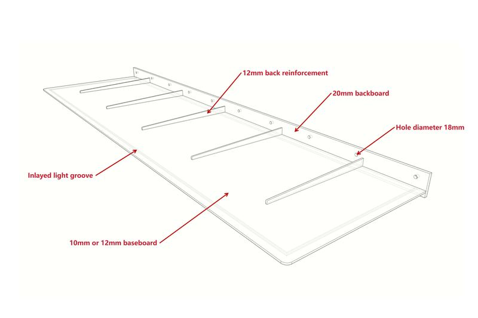
Ultra-slim entrance canopies with inlaid light groove — max overhang 1200 mm, max length 5000 mm.
View details →Reference projects from global architecture practice — see how Gi Village product families deliver real façades around the world.
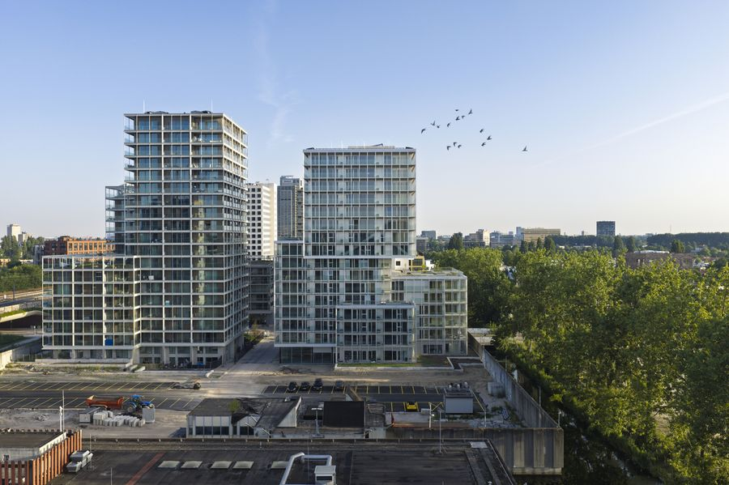
Residential · ApartmentsContinuous balconies finished with transparent glass balustrades — the view stays open, the line stays minimal.
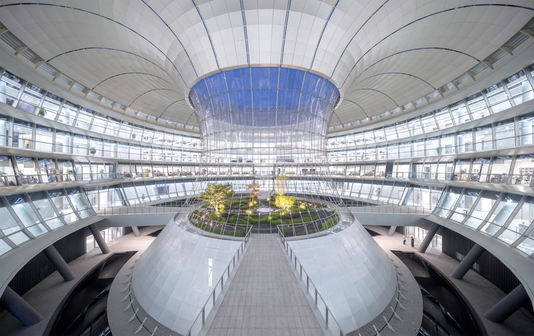
Research CampusPrecision facades are defined by sharp window reveals — crisp, sealed surrounds for every opening.
Restrained luxury: slim, frameless entrance canopies frame the arrival sequence.
Every Gi Village profile is designed to work with the rest of the system — so water is shed, edges are sealed and the façade keeps its clean line for decades.
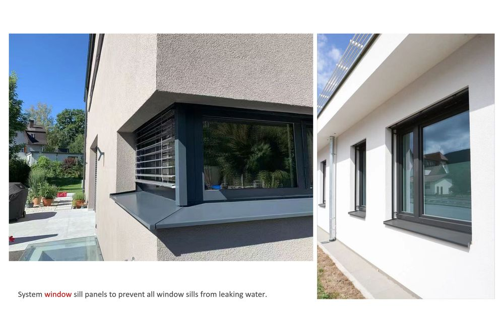
Utility-model patents on our core profiles, plus TIGER powder-coating certification for durable architectural finishes.
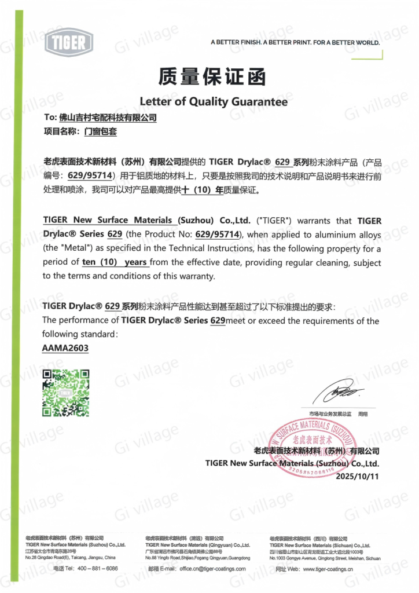
Send us your window schedule or CAD drawings — our engineers will match the right Gi Village system and finish.
Contact Sales Team